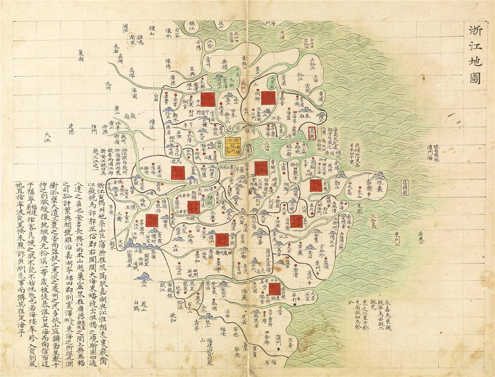

宁波诺丁汉大学
城市化与可持续发展环境 · 硕士在读
ABOUT ME
我本科就读于天津大学仁爱学院建筑学专业，目前在宁波诺丁汉大学攻读城市化与可持续发展环境硕士。本科学习涉及建筑设计，研究生期间研究城市规划与智慧城市，并在宁波诺丁汉大学数字人文实验室参与浙东海防遗产数字化项目，负责文献梳理、空间数据整理、数据库建设与交互展示。
建筑学塑造了我观察空间的方式，城市研究让我看见空间背后的人与环境。跨学科的学习背景，使我能够从空间、社会与环境等多个角度分析问题，探索可行的解决路径。实践项目则锻炼了我面对挑战的韧性，以及将想法落实为成果的执行力。我善于将零散资料组织为清晰的信息，也乐于学习数字工具，将研究内容转化为直观的图像与交互体验。
政治面貌：中共党员
软件技能：ArcGISRhinoAutoCADSketchUpPhotoshopAI 辅助工作流
兴趣爱好：二胡十级观展羽毛球
THE JOURNEY
城市化与可持续发展环境 · 硕士在读
建筑学 · 本科 · 专业成绩 85.54 / 100
实习生 / 科研助理 · 遗址数据、文献整理与数字化采集
实习生 · 青年项目、基层调研与活动协调
实习生 · 建筑方案绘制与报规材料制作
SELECTED EXPERIENCE
01 / ARCHITECTURE
ARCHITECTURE / 16 PAGES
商业、居住与校园。以不同尺度的设计，回应人在空间中的日常。
02 / URBANISM
URBANISM / 47 PAGES
从低空智慧渔农到青年创业、公共空间与社区运营，探索芦蒲村的更新路径。
03 / CIM & URBAN SYSTEMS
EQUITABLE BLUE-GREEN SHELTER NETWORK
将湿地缓冲、社区公共设施与分布式避难节点组织成一张蓝绿网络，使滨水空间同时回应日常生活与极端天气。
04 / DIGITAL HERITAGE

项目使用的历史舆图 · 局部放大预览HISTORIC CARTOGRAPHY / GESTURE INTERACTION
将历史舆图与手势识别结合，以掌心光圈放大局部、照亮预设点位。在这里先移动鼠标或手指探索图面，再打开完整的手势交互网页。
数据与网页来自 Yueee-0305 / zhedong_Yutu ↗ · 本站收录版本：2026.10.12
LET'S CONNECT